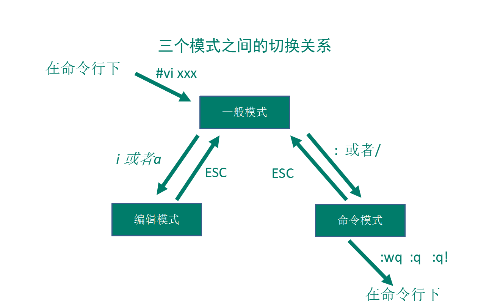

Vim基础
Vim基础
Vim的操作模式
Vim有四种操作模式，分别为：
- 正常模式(normal-mode)
- 插入模式(insert-mode)
- 命令模式(command-mode)
- 可视模式(visual-mode)
① 正常模式
正常模式主要用来浏览和修改文本内容的。
一般的打开Vim之后默认的都是正常模式。在任何模式下，只要按下 Esc 键就可以返回正常模式。
② 插入模式
插入模式是用来向文本中添加内容的。
i：表示进入插入模式，并在光标所在字符前开始输入；
a：表示进入插入模式，并在光标所在字符后开始输入；
o (字母o)：表示进入插入模式并在光标所在行的下一新行开始输入；
s：表示进入插入模式，并删除光标所在的字符；
I：在行首开始输入文字并进入插入模式。此行首指第一个非空白字符处。如果行首有空格，则在 空格之后输入文字并进入插入模式；
A：在行尾开始输入文字并进入插入模式。这个好用，您不必管光标在此行的什麽地方，只要按 A 就会在行尾等着您输入文字；
O (大写字母O)：在光标所在行的上面单独开一新行来输入文字并进入插入模式；
S：删除光标所在行并进入插入模式；
③ 命令模式
命令模式则多用于操作文件。不是操作文本文件的内容，而是对文件本身进行操作，例如：保存文件等；或者用来改变编辑器本身的状态，例如：设定多栏窗口、标签或者退出编辑器等。
④ 可视模式
可视模式相当于高亮选取文本后的普通模式。
可视模式具有子模式，以行为单位进行选取的可视行模式，使用“V”键进入（也就是Shift+v）；和以块为单位进行选取的可视块模式，使用“Ctrl+v”键进入。
模式之间的切换
其它模式==>正常模式
- 按 Esc键
正常模式==>插入模式
- 按 i 在光标前插入
- 按 I 在行首插入
- 按 a 在光标后插入
- 按 s 删除光标所在的字符再插入
- 按 A 在行末插入
- 按 o 在当前行之下新建行
- 按 O 在当前行之上新建行
- 按 S 删除光标所在行再插入
正常模式==>命令模式
- 按（shift 加 冒号）或 /
正常模式==>可视模式
- 按 v 可视模式
- 按 V 可视块模式
以下是正常模式【一般模式】、插入模式【编辑模式】和命令模式之间的转换图，没有视图模式是因为其就是高亮后的正常模式。
命令模式下的基本操作
:w 保存编辑后的文件内容，但不退出vim编辑器。
这个命令的作用是把内存缓冲区【一个隐藏目录】中的数据写到启动vim时指定的文件中。
:w! 强制写文件，即强制覆盖原有文件。
如果原有文件的访问权限不允许写入文件，例如，原有的文件为只读文件，则可使用这个命令强制写入。但是，这种命令用法仅当用户是文件的属主时才适用，而超级用户则不受此限制。
:w filename 把编辑处理后的结果写到指定的文件中保存，不退出vim。
:w! filename 把编辑处理后的结果强制保存到指定的文件中，如果文件已经存在，则覆盖现有文件。
:wq 保存文件并退出vim。
:wq! 强制保存文件，并退出vim。
:wq! filename 把编辑处理后的结果强制保存到指定的文件中，如果文件已经存在，则覆盖现有文件，并退出vim编辑器。
:q 不保存文件，退出vim【在没有做任何修改的前提下可以退出；如果有修改操作使用该命令会有提示该命令无法生效】。
提示内容：E37: 已修改但尚未保存 (可用 ! 强制执行)
:q! 不保存文件，强制退出vim【在有无修改操作的情况下都可以使用】。
:e! 放弃所有修改，从上次保存文件开始再编辑。
Vim常用快捷键
【正常模式】yy + p ：拷贝当前行；
在正常模式下，使用yy复制当前行，p粘贴当前行。
【正常模式】数字yy + p：多行拷贝，拷贝当前行向下的指定数字行；如：3yy + p，拷贝当前行的下三行【包括当前行】至当前行的下一行；
【正常模式】/关键字 + Enter：在文件中查找某个单词，如果有多个结果，使用 n 进行切换；
【正常模式】G：跳至文档的最末行；
【正常模式】gg：跳至文档的首行；
【正常模式】n：撤销操作；
【正常模式】数字 + shift + g：跳转至指定行的行首；
- 第一步：显示行号，
:set nu； - 第二步：输入指定行数，如：10；
- 第三步：输入
shift + g；
参考文档：
 微信
微信